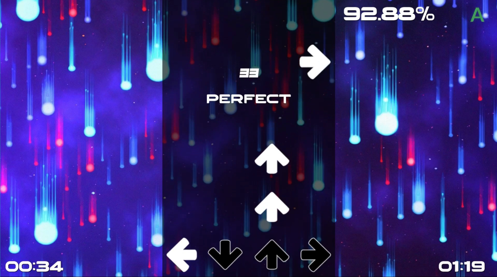

Welcome to my website!
Why ICT suits me
Hi, I'm Tias, and welcome to my website! I've enjoyed programming ever since I first learned it in high school. What I like most about programming is solving problems and figuring out how to make things work the way I want them to. I also really enjoy the freedom of being able to create almost anything I can think of, as long as I can figure out how to program it. I've already worked on several projects, including games and a Discord bot, and these experiences have only made me more interested in becoming a software developer. That's why I decided to study HBO-ICT at the HZ.
You can read more about my previous projects here.

Finding your way around
This website is my personal portfolio for the HBO-ICT programme at HZ. Here you can learn more about me, why I chose to study ICT, my previous programming experience and my progress throughout the year. Here's where you can find everything:
- About me - Learn more about who I am, my hobbies and interests.
- Why IT? - Find out why I chose to study ICT, why I chose HZ and what motivates me.
- Blog - Read about my programming experience, personal goals, SWOT analysis, my future direction in IT and more.
- Dashboard - View my study progress, grades and the courses I'll be taking throughout my first year.